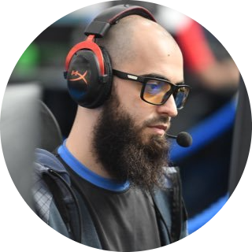

|  | Ylli RamadaniDota 2 player for Kosovo Federation An Albanian born in Kosovo, Garter began his professional Dota career in 2007. A well known player in the Albanian region, Garter played on teams with icons in the scene such as PGG and Vigoss. He began his Dota 2 career with Virus Gaming in 2011, playing with Ceb and PARIS at ESWC 2011. He took a break from Dota 2 in early 2012. After returning to Dota 2, he had stints with several teams. He played as constant stand in for Kaipi before The International 2013 and then as a solo middle player for Cede Nullis afterwards. He continued standing in with teams such as Flipsid3 Tactics and mYinsanity during 2014. After standing in for No Logic Gaming after the departure of Ditya Ra, he briefly joined the team before leaving and being replaced by Madara. He then formed Samurai Champloo, alongside Attacker. He was then picked up by Prodota Gaming where he stayed for 15 months, remaining the cornerstone of the organization through numerous roster changes. In January 2020 he quit Dota 2 and announced his retirement. |
| Carry player | ⭐⭐⭐⭐⭐ | Support player | ⭐⭐ |
| Mid player | ⭐⭐⭐⭐ | Offlane player | ⭐⭐ |